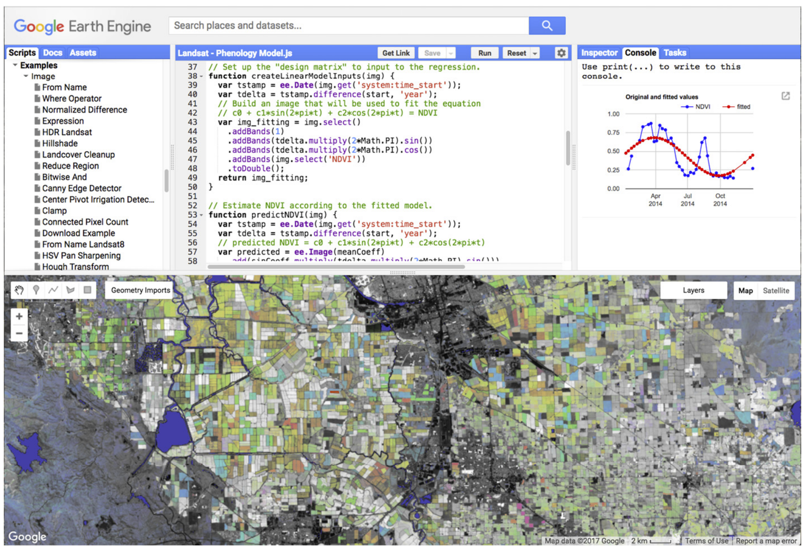

class: inverse, center, title-slide, middle <style> .title-slide .remark-slide-number { display: none; } </style> # Remote Sensing for Urban Analytics ### —— based on the Google Earth Engine Platform #### Adam Zhou #### 20/06/2022 <svg aria-hidden="true" role="img" viewBox="0 0 384 512" style="height:1em;width:0.75em;vertical-align:-0.125em;margin-right:0.2em;font-size:inherit;fill:white;overflow:visible;position:relative;"><path d="M172.268 501.67C26.97 291.031 0 269.413 0 192 0 85.961 85.961 0 192 0s192 85.961 192 192c0 77.413-26.97 99.031-172.268 309.67-9.535 13.774-29.93 13.773-39.464 0z"/></svg>[SUPD, PKU](https://www.ucl.ac.uk/bartlett/casa/) <a href="https://github.com/AdamZhou3/rsgee" class="github-corner" aria-label="View source on GitHub"><svg width="80" height="80" viewBox="0 0 250 250" style="fill:#fff; color:#151513; position: absolute; top: 0; border: 0; left: 0; transform: scale(-1, 1);" aria-hidden="true"><path d="M0,0 L115,115 L130,115 L142,142 L250,250 L250,0 Z"></path><path d="M128.3,109.0 C113.8,99.7 119.0,89.6 119.0,89.6 C122.0,82.7 120.5,78.6 120.5,78.6 C119.2,72.0 123.4,76.3 123.4,76.3 C127.3,80.9 125.5,87.3 125.5,87.3 C122.9,97.6 130.6,101.9 134.4,103.2" fill="currentColor" style="transform-origin: 130px 106px;" class="octo-arm"></path><path d="M115.0,115.0 C114.9,115.1 118.7,116.5 119.8,115.4 L133.7,101.6 C136.9,99.2 139.9,98.4 142.2,98.6 C133.8,88.0 127.5,74.4 143.8,58.0 C148.5,53.4 154.0,51.2 159.7,51.0 C160.3,49.4 163.2,43.6 171.4,40.1 C171.4,40.1 176.1,42.5 178.8,56.2 C183.1,58.6 187.2,61.8 190.9,65.4 C194.5,69.0 197.7,73.2 200.1,77.6 C213.8,80.2 216.3,84.9 216.3,84.9 C212.7,93.1 206.9,96.0 205.4,96.6 C205.1,102.4 203.0,107.8 198.3,112.5 C181.9,128.9 168.3,122.5 157.7,114.1 C157.9,116.9 156.7,120.9 152.7,124.9 L141.0,136.5 C139.8,137.7 141.6,141.9 141.8,141.8 Z" fill="currentColor" class="octo-body"></path></svg></a><style>.github-corner:hover .octo-arm{animation:octocat-wave 560ms ease-in-out}@keyframes octocat-wave{0%,100%{transform:rotate(0)}20%,60%{transform:rotate(-25deg)}40%,80%{transform:rotate(10deg)}}@media (max-width:500px){.github-corner:hover .octo-arm{animation:none}.github-corner .octo-arm{animation:octocat-wave 560ms ease-in-out}}</style> --- <iframe width="1080" height="600" src="https://player.bilibili.com/player.html?aid=417550384&bvid=BV1VV411H71T&cid=325002213&page=1&high_quality=1" scrolling="no" border="0" frameborder="no" framespacing="0" allowfullscreen="true"> </iframe> --- <iframe width="1080" height="600" src="https://earthengine.google.com/iframes/timelapse_player_embed.html#v=22.51954,113.93194,11.375,latLng&t=1.12&ps=25&bt=19840101&et=20201231&startDwell=0&endDwell=0" frameborder="0" allowfullscreen></iframe> --- class: inverse, middle ## Content * 遥感技术的基本原理 * 遥感的基本概念与类型 * 电磁辐射与电磁波谱 * 地物反射波谱 * 遥感图像 * 遥感平台与传感器 * 遥感图像的特征 * 遥感在城市分析中的应用 * 夜间灯光 * 城市土地密度 --- ## 遥感(Remote Sensing)的基本概念 * The science and art of obtaining information about an object throgh the analysis of data acquired by a device that is **not in contact with the object**. (Lillesand and Kiefer 2000) * **不直接接触**被研究的目标，从远处把目标**辐射或反射**的电磁波特性记录下来，经过传输、处理和分析，揭示出物体的特征性质及其变化的综合探测技术 * 传感器与遥感平台 * 传感器（Sensor）: 接收电磁波特征的仪器 * 遥感平台（Platform）：搭载传感器的平台（地面，航空，航天） --- ## 遥感的类型 * 主动遥感: 由传感器主动发射一定电磁波能量并接收目标的后相散射信号 * 被动遥感 * 基于地物辐射 * 基于地物反射 -- <figure> <figcaption style="line-height:30px;font-family:Sans-serif; font-size: 10px;font-weight: bold; text-align:center"> 雷达；夜间灯光； 卫星航片</figcaption> </figure> ??? 由传感器主动发射一定电磁波能量并接收目标的后相散射信号 --- ## 电磁辐射与电磁波谱 * 电磁辐射：温度超过0K的物体都会向外辐射不同波长的电磁波 <figure> </figure> -- * 电磁波谱 <figure> </figure> --- ## 地物的反射波谱 * 同种地物在不同波段，不同地物在同一波段反射率不同。 <figure> </figure> -- * 水中含泥沙；水中含叶绿素；虫害 -- <figure> </figure> ??? 任何目标物都具有发射、反射和吸收电磁波的性质，这是遥感的信息源。目标物与电磁波的 相互作用，构成了目标物的电磁波特性，它是遥感探测的依据。 水中含泥沙时，可见光波段反射率增加，峰值出现在黄红区。 水中含叶绿素时，近红外波段反射率明显增加。 土质越细、有机质含量越低、含水量越低，反射率越高。 --- ## 遥感在城市分析中的应用 * Google Earth Engine - 行星尺度的地理空间分析工具 * Timelapse, Explorer, Code Editor, Data Catalog <figure>  </figure> * GEE 登录政策 * 开发方式 * Javascript * Python --- ## 遥感图像的特征 - 以Landsat为例 * [Landsat](https://developers.google.com/earth-engine/datasets/catalog/landsat) * 从1972年到现在，以大约每两周一次的周期和30米的空间分辨率对整个地球表面进行成像，包括多光谱(7个)和热成像。 * Collection 2; Real Time; Tier 1; Tier 2 * 时间分辨率 * 空间分辨率 - Spatial Resolution * 光谱分辨率 - Spectral Resolution * 波段宽度 - Wavelength * 辐射分辨率 - Radiometric Resolution * 能分辨的最小辐射度差 - pixel min/max * 离散化 - scale and offset ??? https://www.usgs.gov/media/videos/landsat-collections-what-are-tiers --- <figure> <img src="image/radiometric.png" width="650pt" style="display: block; margin: auto;"> </figure> --- ## 全球夜间灯光时间序列可视化 - Javascript * 全球夜间灯光时间序列回归 * [code](https://code.earthengine.google.com/625b6a12791bcbf8982ef975d18b00a1) * [project](https://github.com/AdamZhou3/NighttimeLightTrend) * [vis](https://adamzhou3.github.io/NighttimeLightTrend/) * 波段合成（Layer stacking）：对各个不同的波段分别赋予RGB颜色将得到彩色影象 <figure> </figure> --- ## 城市土地密度变化分析 - Python * 圈层分析 * 城市中经济活动与到城市中心的空间距离成反比 <figure> </figure> * 城市土地密度时序动态对比 * [中欧](E:\190_GEE\2101_Anaysis\00_RES\RES1350\fig) --- ## References * Google Timelapse. Available at: https://earthengine.google.com/timelapse/ (Accessed: 19 June 2022). * Gorelick, N., Hancher, M., Dixon, M., Ilyushchenko, S., Thau, D. and Moore, R. (2017). ‘Google Earth Engine: Planetary-scale geospatial analysis for everyone’. Remote Sensing of Environment, 202, pp. 18–27. * Campbell, James B., and Randolph H. Wynne. (2011). Introduction to remote sensing. Guilford Press. * Jiao, L. (2015). ‘Urban land density function: A new method to characterize urban expansion’. Landscape and Urban Planning, 139, pp. 26–39. --- class: inverse, center, middle # Thanks! ### All faults are mine. <svg aria-hidden="true" role="img" viewBox="0 0 512 512" style="height:1em;width:1em;vertical-align:-0.125em;margin-right:0.2em;font-size:inherit;fill:white;overflow:visible;position:relative;"> <path d="M476 3.2L12.5 270.6c-18.1 10.4-15.8 35.6 2.2 43.2L121 358.4l287.3-253.2c5.5-4.9 13.3 2.6 8.6 8.3L176 407v80.5c0 23.6 28.5 32.9 42.5 15.8L282 426l124.6 52.2c14.2 6 30.4-2.9 33-18.2l72-432C515 7.8 493.3-6.8 476 3.2z" /> </svg>[zz_zhou@pku.edu.cn](mailto:ucfnhou@ucl.ac.uk) ??? My research interests focus on mining, comparing and integrating various types of location data (e.g., smart card data, social media data, GPS tracked running and cycling data) for a better picture of variabilities of mobility patterns across spatial and temporal dimensions and social groups.